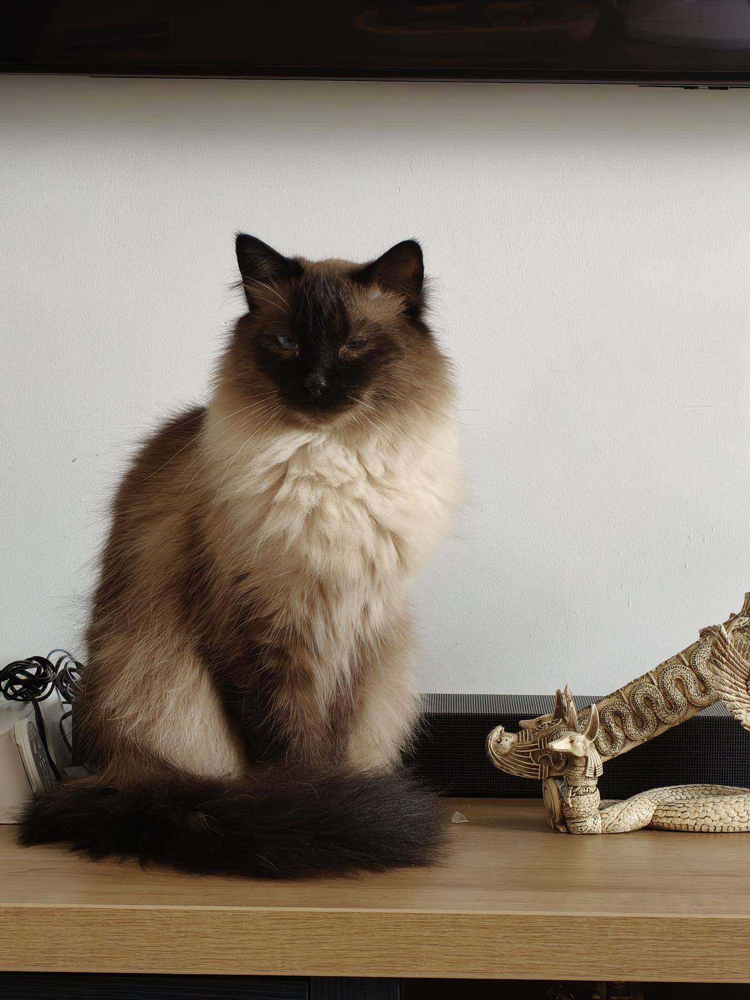
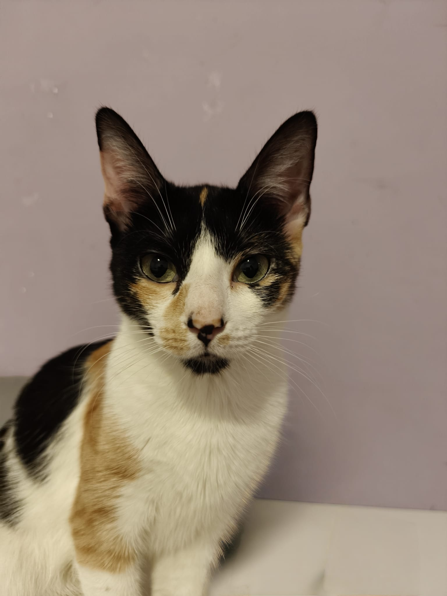
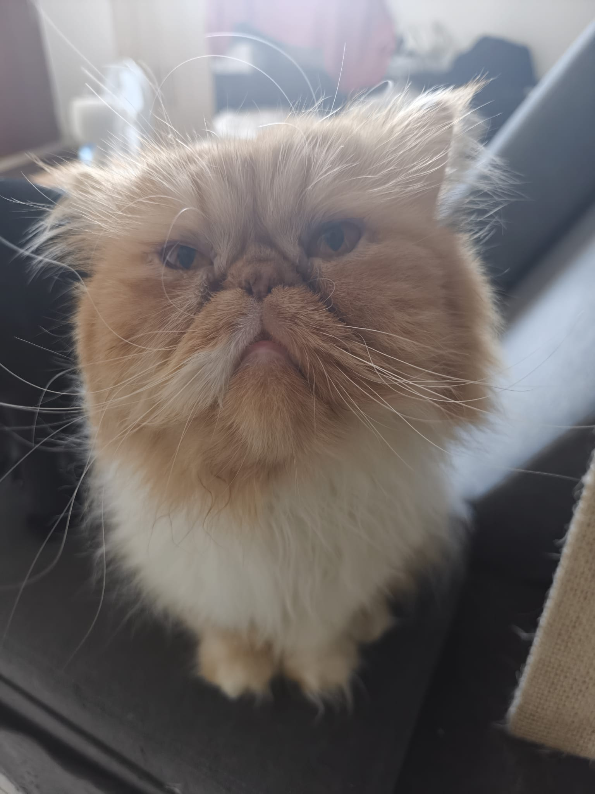
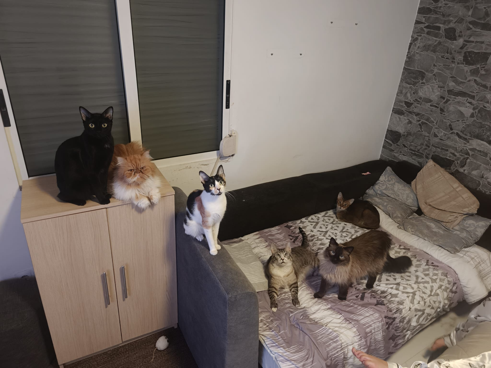

Galeria de mis gatos
Este es mi proyecto de galeria con HTML y CSS. He utilizado fotografias de mis seis gatos, que forman parte de mi familia.

Noel
Noel posando encima del mueble.

Teo
Teo descansando comodamente en la manta.

Lilo
La unica nina de la casa.

Nikolayd
Nikolayd es el pequeno leon.

Stitch
Stitch mirando mientras le hago una foto.

Ocane
Ocane descansando en el sofa de casa.

Todos juntos
Una fotografia de mis seis companeros de casa.